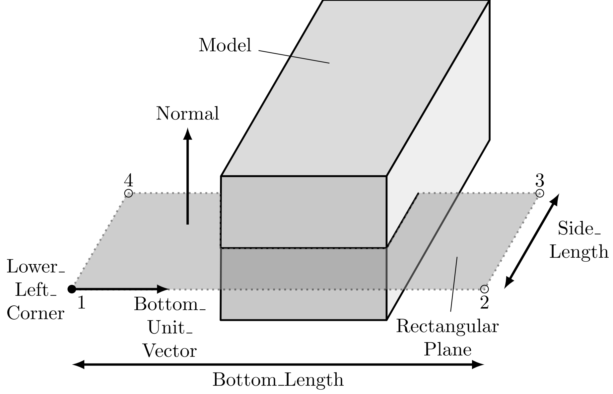

Bond-Filters
Rectangular Plane
For a recangular plane following parameters needs to be defined:
Normal X/Y/Z: Numeric values representing normal components. (Float64 or Int64)
Lower Left Corner X/Y/Z: Numeric values representing lower left corner components. (Float64 or Int64)
Bottom Unit Vector X/Y/Z: Numeric values representing bottom unit vector components. (Float64 or Int64)
Bottom Length: Numeric value representing the bottom length. (Float64 or Int64)
Side Length: Numeric value representing the side length. (Float64 or Int64)

The yaml definition looks like this
Bond Filters:
bf_1:
Bottom Length: 2.0
Bottom Unit Vector X: 1.0
Bottom Unit Vector Y: 0.0
Bottom Unit Vector Z: 0.0
Lower Left Corner X: -0.5
Lower Left Corner Y: 0.0
Lower Left Corner Z: -1.0
Normal X: 0.0
Normal Y: 1.0
Normal Z: 0.0
Side Length: 2.0
Type: Rectangular_PlaneDisk
For a disk following parameters needs to be defined:
Normal X/Y/Z: Numeric values representing normal components. (Float64 or Int64)
Center X/Y/Z: Numeric values representing center components. (Float64 or Int64)
Radius: Numeric value representing the radius. (Float64 or Int64)